文明古城邯郸
综合概况
邯郸市是国家历史文化名城、中国优秀旅游城市、国家园林城市、全国双拥模范城和中国成语典故之都，国务院批准具有地方立法权的“较大的市”和市区人口超百万的大城市。
邯郸市位于河北省南端，太行山东麓，地处东经114°03'—40'，北纬36°20'—44'之间，西依太行山脉，东接华北平原，与晋、鲁、豫三省接壤，全市现辖有6个区、1个县级市、11县,1个国家级开发区和1个省级开发区，市区总面积12073.8平方公里，市区总人口1054.70万人；主城区面积2661.83平方公里，主城区人口367.42万人。
历史久远文化深厚。邯郸历史悠久，文化灿烂，是中华文明的重要发祥地之一。早在8000年前，这里就有人类繁衍生息，孕育了新石器早期的磁山文化；战国时期，邯郸作为赵国都城，历经8代国君达158年之久，是我国北方的政治、经济、文化中心；秦统一六国后，为天下三十六郡郡治之一；汉代与长安、洛阳、临淄、成都共享“五都盛名”；东汉末年，曹魏时期在邯郸南部邺城一带建都；北宋时期，邯郸东部的大名成为北宋都城汴梁的“陪都”。抗日战争和解放战争时期，邯郸西部涉县是八路军129师司令部和晋冀鲁豫边区政府所在地。
交通网络通畅便捷。邯郸区域位置独特，位于晋冀鲁豫四省要冲和中原经济区腹心，在四省交界区是唯一的特大城市，与石家庄、太原、济南、郑州四个省会城市的距离均在200公里左右，与北京、天津等大都市的距离均在450公里以内。邯郸区位优势十分明显，为我国三大经济圈所环绕，东进与长三角经济圈相接，南下可与珠三角经济圈联系，北拓与京津冀及环渤海经济圈近邻。
旅游资源十分丰富。邯郸山青水秀，人杰地灵，深厚的历史文化积淀，巍峨迭起壮观的太行山麓，为这座古老而现代的城市，孕育了丰富的人文山水旅游资源。一是红色文化旅游资源。涉县赤岸的129师司令部旧址，呈现了八路军转战太行的光辉历程；纪念在抗日战争中牺牲的晋冀鲁豫四省英雄的晋冀鲁豫烈士陵园,安葬着时任八路军副总参谋长左权和中共北方局军委书记张兆丰等二百多名为国捐躯革命英烈；武安市冶陶镇的中共晋冀鲁豫中央局和军区旧址，刘伯承、邓小平、董必武、薄一波、徐向前等老一辈革命家在这里运筹帷幄，决胜千里。二是历史人文旅游资源。邯郸是历史文化名城，人类文明甚至可以追溯到8000年前开启农耕文明的磁山文化，一则则寓意深邃的成语典故，一座座古迹遗址、陵墓祠堂、碑刻石窟,都向人们讲述着古城辉煌历史和灿烂文化。而其中最有名的要数有着“古城、水城、太极城”之称的5A景区广府古城、有着神奇传说的5A景区华夏始祖娲皇宫以及感悟人生的梦文化黄梁梦景区。邯郸有着绚丽多彩的民俗文化和民间艺术，磁州窑是中国古代北方最大的民窑体系，冀南皮影、武安平调落子等102个项目列入国家级和省级非物质文化遗产，邯郸土特产、邯郸名小吃、邯郸菜形成了邯郸独特的饮食文化。三是太行山水旅游资源。西部的武安市和涉县，太行山绵延千里，巍峨耸立，峡谷幽长，满山遍野苍松翠柏，处处景观，这里有包括京娘湖、七步沟、武当山、朝阳沟、长寿村、五指山等在内的7、8家的4A级景区，游客可以在此体验深山幽谷、禅宗佛教的宁静，也可戏水揽山、滑雪、泡温泉，尽情地在这里拥抱大自然。
名优特产
- 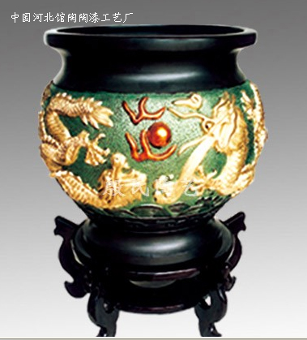二龙戏珠卷筒
- 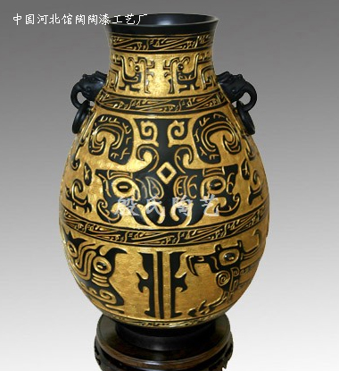龙凤纹壶
- 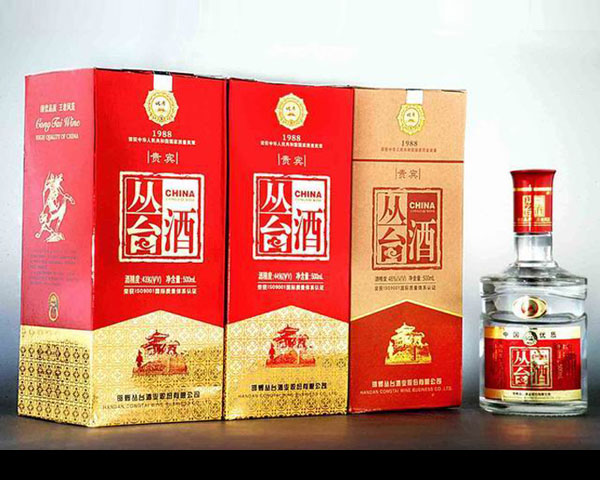贵宾丛台酒
- 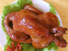二毛烧鸡
- 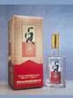贞元酒
- 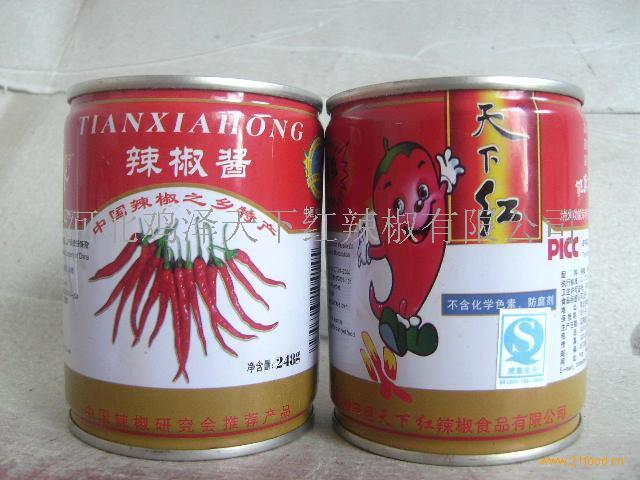天下红辣椒酱
文物古迹
- 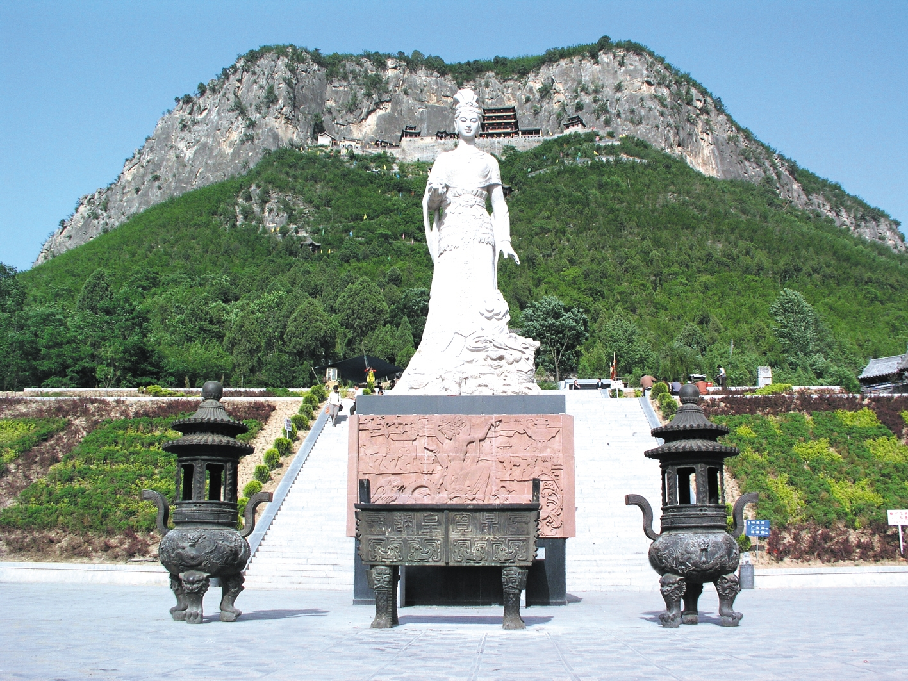蜗皇宫
- 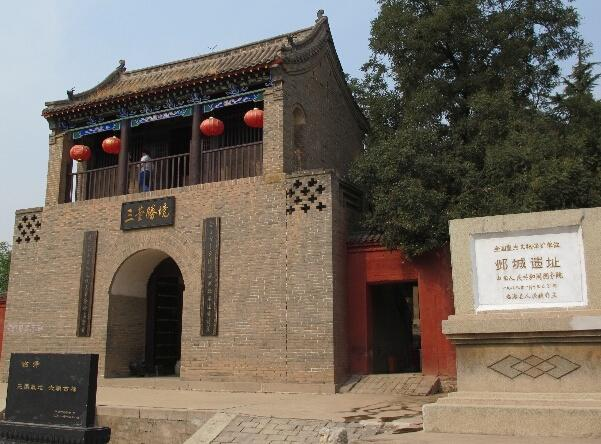邺城遗址
- 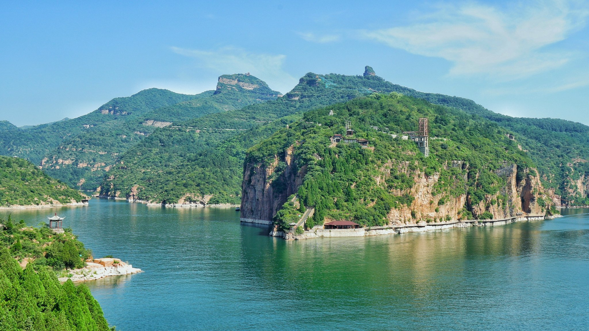京娘湖
- 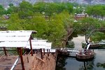十六步沟
- 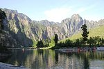野三坡
- 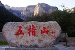太行五指山
邯郸成语
- 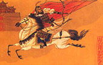胡服骑射
- 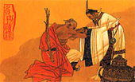负荆请罪
- 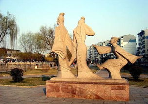邯郸学步
- 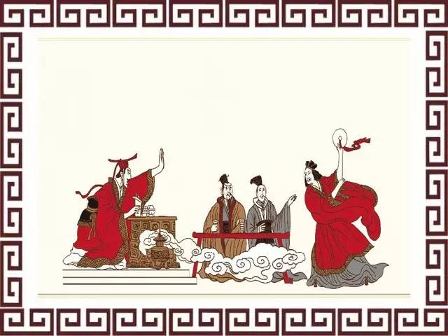完璧归赵
- 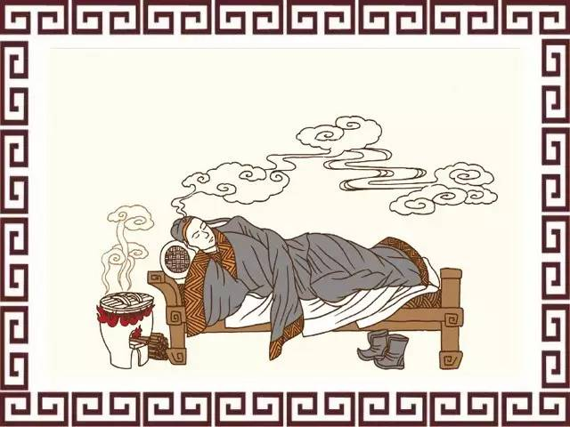黄粱美梦
- 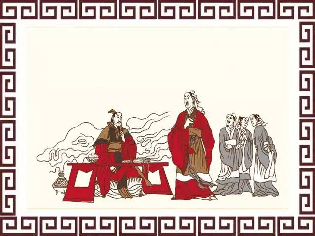毛遂自荐
交通运输
全市公路通车总里程1.61万公里，公路密度134公里/百平方公里，其中：高速公路428公里；普通干线一级公路769公里、二级公路1479公里、三级公路1285公里，三级以下公路10906公里。全市213个乡镇、5208个行政村全部实现公路通达。市主城区与各县（市、区）、各县（市、区）之间均有高速公路和二级以上公路相连，各县（市、区）与乡镇之间均有干线公路相通。全市共有长途班线、城乡公交和旅游客运企业83家、客车8741部，道路客运驾驶从业人员21620名。全市所有行政村全部通客车。全市有一级客运站3个、二级客运站15个、四级站4个、五级站4个、简易站80个。主城区拥有公交车1564辆，运营线路92条，线路总长度1530公里，枢纽站12座，万人拥有公交车13.2标台，出行分担率达16.2%。主城区内有出租汽车4261辆，万人拥有出租车14标台。邯郸机场位于邯郸市西南，占地面积133.33公顷，机场等级4C级，跑道长2600米，可起降波音737系列、空客319、320等中型客机，运营上海、广州、成都、杭州、哈尔滨等航线。
2016年全市公路货物运输总量18744.3万吨，比上年增长10.5%；旅客运输总量5345.7万人，增长6.5%；铁路货物运输总量1691.8万吨，下降7.1%；旅客运输总量625.7万人，下降4.6%。民航货物运输总量515.7吨，增长30%；旅客运输总量46.3万人，增长86.1%。
主城区共有公共汽车运营车辆1979辆，客运出租车运营车辆4261辆。全年公共交通共运送乘客1.61亿人次，出租汽车客运总量3499万人次。
年末全市民用汽车保有量达到120.6万辆，比上年末增长16.5%。其中：轿车66.4万辆，增长17.8%。在全市汽车总量中，私人汽车108.6万辆，增长13.7%。
发展规划
“十三五” 时期是邯郸加快发展、加快转型升级、绿色崛起的关键时期。《邯郸市国民经济和社会发展第十三个五年规划》立足产业资源基础和构建现代产业体系的发展要求，明确提出“十三五”期间，邯郸发展围绕“两大发展定位”，着力抓好“三大发展战略”，全面提升要素吸聚力、社会凝聚力和区域影响力，塑造邯郸发展核心优势。
两大发展定位：城市定位：京津冀联动中原的区域中心城市，环渤海辐射中西部的重要门户城市。产业定位：“五基地一中心”，即全国重要的精品钢材基地、先进装备制造基地、食品工业基地、节能环保产业基地、新能源汽车基地，中国北方重要的商贸物流中心。
精品钢材基地。瞄准市场需求，重点发展用于轻轨、重轨的合金钢、优特钢、不锈钢，用于汽车、船舶、桥梁的中厚板、涂层板、镀锌板。围绕国家重大装备和重点工程建设需求，培育核电用关键钢种、超超临界锅炉用大口径厚壁无缝管、船用特种耐蚀钢和耐蚀钢管、第三代汽车用钢等亟需产品。先进装备制造基地。重点发展成套整机装备，优化配套，加强基础，打造专用汽车、棉机、纺机、煤机、农机、家电等专业化生产基地。食品工业基地。重点发展粮油、果蔬、肉类等精深加工产业。节能环保产业基地。围绕工业节能、建筑节能、“三废”处理、环境监测、资源综合利用等需求，大力发展节能环保材料产业。新能源汽车基地。加快发展新能源汽车整车，重点发展纯电动城市客车和乘用车、清洁能源轻重卡、工矿系列和多用途场地专用电动车，推动品牌化、专业化、系列化发展。
北方重要的商贸物流中心。着力打造现代物流、商贸服务、商务会展、健康养老四大标志性服务业。1、现代物流。提升钢铁、煤炭、农副产品物流，培育发展冷链物流、低碳物流、保税物流和快递物流等新型物流。2、商贸服务。以建设区域性现代化商贸中心为目标，构建并完善城市商业中心、区域商业中心、社区商业中心三级商业体系。3、商务会展。大力发展楼宇经济，做优做强广告服务、法律服务、中介服务，培育发展调查咨询服务和企业管理服务，构建综合性多元化商务服务格局。积极发展专业型品牌化会展业，提升国际商务文化节、国际采购经贸洽谈会、国际工业装备博览会、中国（邯郸）国际打印耗材展会等展会影响力，打造“邯郸会展”城市名片。4、健康养老。统筹规划布局社区养老服务设施，大力推广互助养老模式，积极探索社区养老和居家养老相结合的新模式。大力发展养老机构，坚持市场化与社会化相结合，办好公办保障性健康养老机构，支持各类投资主体举办、运营养老机构，积极引进国内外知名健康养老品牌，推动健康养老产业多层次、多元化发展。